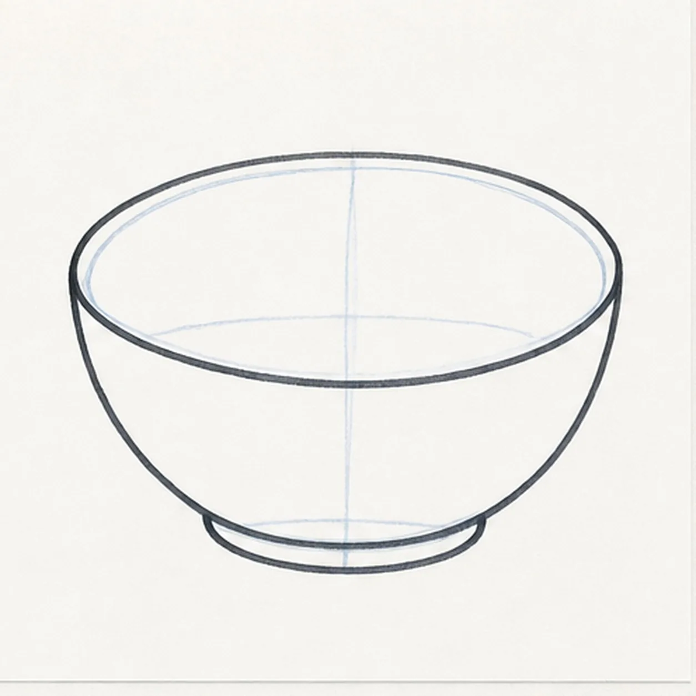
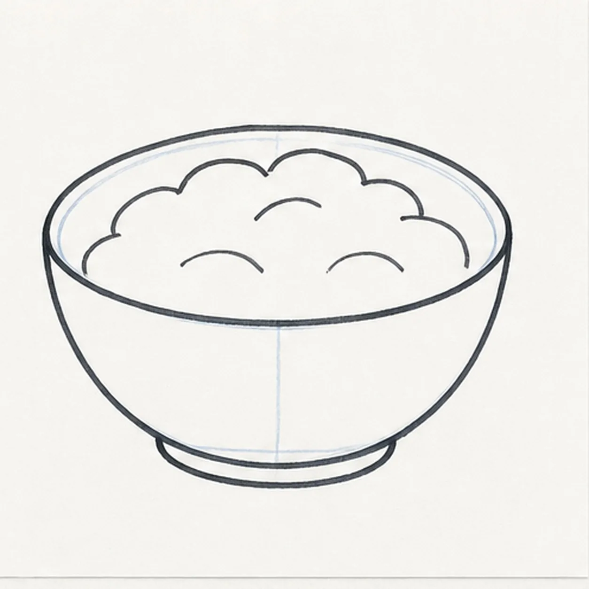
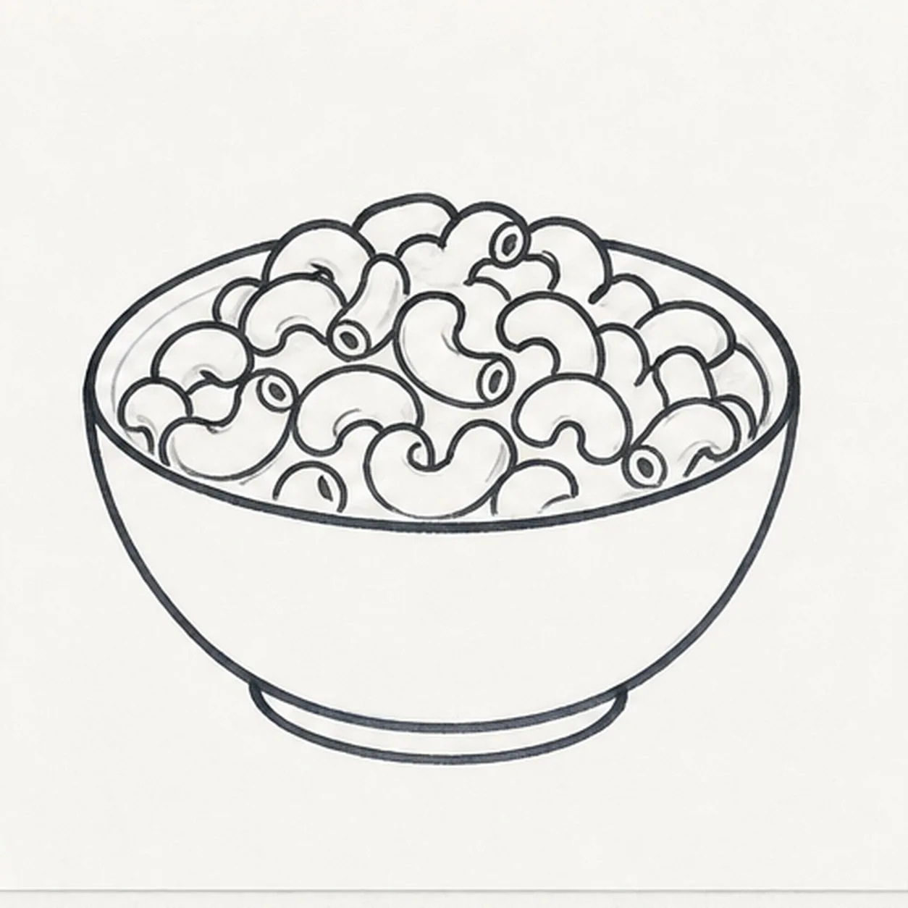
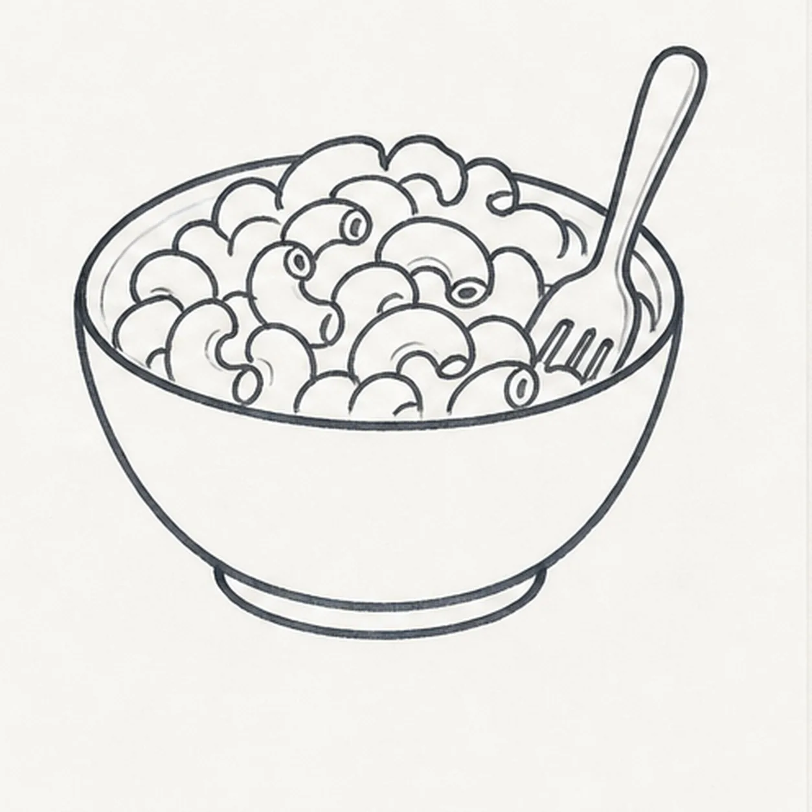
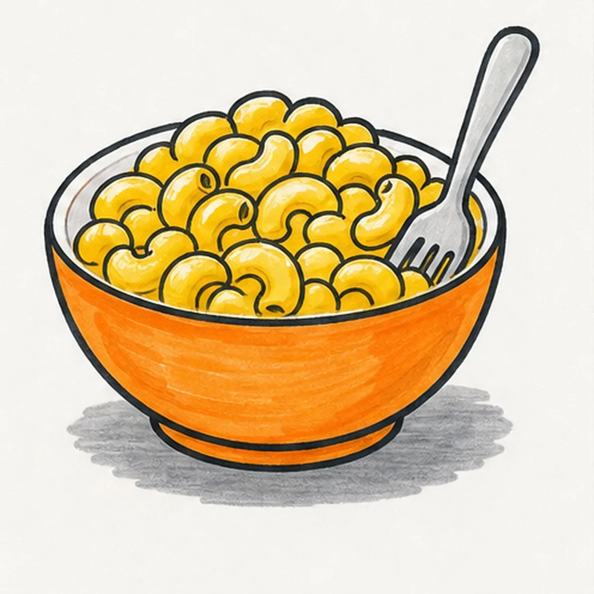

Felt-tip marker mode
Let's draw a bowl of macaroni
Treat this as one playful practice round: sketch the idea loosely, simplify the shapes, then commit with confident marker outlines and bright fills.
-
01

Draw the bowl
Draw a wide oval rim, then curve the sides down into a rounded bowl with a small base.
Doodle tip: Make the rim wider than the base. That gives the macaroni room to pile up.
-
02

Pile in the noodles
Add a loose mound of noodles inside the rim, letting the pile rise above the back edge.
Doodle tip: Think of this as one big bumpy shape first. The individual elbows come next.
-
03

Shape elbow pieces
Break the mound into C-shaped elbow macaroni pieces with bold curved lines.
Doodle tip: Vary the noodle sizes a little. Repeated identical C shapes can look like a pattern instead of food.
-
04

Stripe the bowl
Add a bright stripe across the bowl front, then place a small marker shadow underneath.
Doodle tip: Curve the stripe with the bowl. A flat stripe can make the bowl look like a rectangle.
-
05

Color the macaroni
Fill the elbow pieces with yellow-orange marker and add a few darker sauce accents on the same noodles.
Doodle tip: Leave tiny white gaps where the marker skips. Those gaps make the noodles feel glossy without extra detail.
-
06

Make the macaroni pop
Thicken the black outlines, even the marker fills, clarify the noodle edges and bowl stripe, and reinforce the existing sauce shadows.
Doodle tip: Stop before adding a face, spoon, words, or a border. The bowl, noodles, stripe, and color carry the doodle.